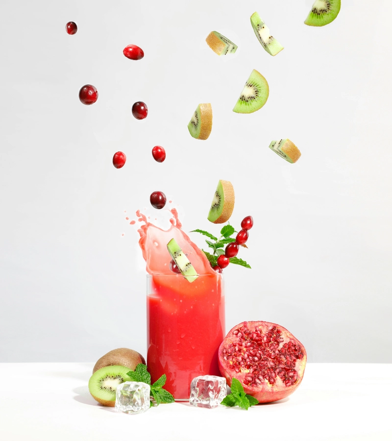
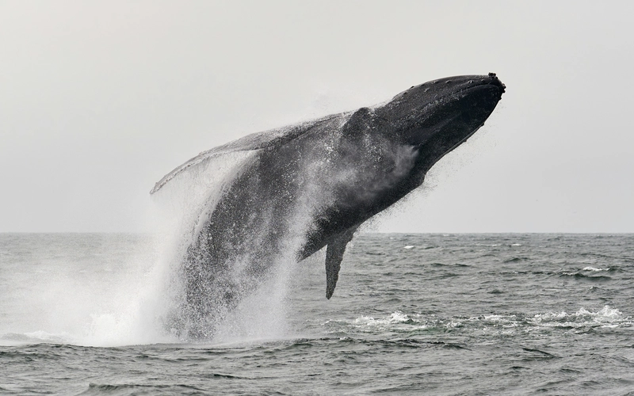

Let's keep it natural
It's healthy
At Bountiful Foods, we champion the goodness of fruits and vegetables for your well-being. Packed with essential nutrients and antioxidants, these wholesome foods boost immunity, aid digestion, and reduce the risk of chronic diseases. Embrace a healthier lifestyle with our bountiful selection of nature's bounty.
It's a lifestyle
At Bountiful Foods, we advocate for a lifestyle centered around nourishing choices. By embracing a diet rich in fruits, vegetables, and healthy drinks, you're not just eating; you're cultivating a lifestyle of vitality and wellness. Incorporating these wholesome foods into your daily routine promotes energy, supports mental clarity, and fosters overall well-being. Choose Bountiful Foods to embark on a journey towards a vibrant and fulfilling lifestyle, one delicious and nutritious bite at a time.
The Best Drinks
The Best Selection
At Bountiful Foods, we take pride in crafting refreshing and nutritious beverages to complement your healthy lifestyle. Our selection of healthy drinks is thoughtfully prepared to provide a burst of flavor and vitality with every sip. From freshly squeezed fruit juices bursting with vitamins and antioxidants to invigorating smoothies packed with wholesome ingredients like leafy greens, berries, and plant-based proteins, our drinks are designed to fuel your body and nourish your soul. Whether you're in need of a post-workout pick-me-up or simply craving a refreshing treat, our beverages offer a delicious way to hydrate and revitalize.
Strongly Nutritious
Each sip from our curated collection of healthy drinks at Bountiful Foods is a celebration of wellness and flavor. Indulge in our assortment of herbal teas, expertly brewed to soothe the senses and promote relaxation. Quench your thirst with our revitalizing kombucha, brimming with probiotics and digestive enzymes to support gut health. For those seeking a caffeine boost without the jitters, our selection of nutrient-rich smoothie bowls, blended with ingredients like matcha, acai, and almond milk, offers a deliciously satisfying alternative. Elevate your beverage experience and nourish your body from the inside out with our carefully crafted array of healthy drinks.
Explore Monterey Bay
Enjoy Peace
Monterey Bay offers a serene escape, where the gentle lull of waves and panoramic coastal views create a perfect backdrop for finding peace. Whether walking along the Coastal Recreation Trail or simply basking in the beauty of the shoreline, tranquility reigns supreme in this idyllic coastal sanctuary.
Embrace Adventure
Embrace adventure along the rugged shores of Monterey Bay, where endless possibilities await. From kayaking through kelp forests to exploring tide pools teeming with marine life, there's no shortage of excitement to be found. Hike along scenic coastal trails, where breathtaking vistas reward every step, or embark on a whale watching excursion to witness majestic creatures in their natural habitat. With boundless opportunities for exploration and discovery, Monterey Bay invites you to embrace the thrill of adventure at every turn.
Carslbad Forecast
Current temperature:
Min. temperature:
Max. temperature:
Humidity:
Next 3 days at 9 AM
Keep Being Healthy
Your body is grateful to you!
You have ordered drinks using this website!